Sitar Swami Analysis
The Sitar Swami guitar pedal is Sitar simulator designed by Danelectro in 2001 and included in the Miscellaneous Series. It is built in a robust die-cast enclosure with hippie/flower graphics.
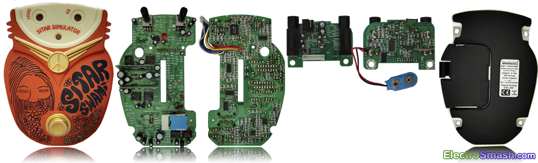
The pedal named by the Sitar Guitar seems to be designed to get mid-eastern string tones. In practice, the sound experience is rather an overdriven octaver with a continuous flanger. So, do not expect it to sound exactly like a sitar, this effect is part of the Danelectro Hippie Pedals together with the Psycho Flange and the Back Talk Reverse Delay and is aimed for 60's creative/psychedelic/space/noisy sounds.
Table of Contents:
1. Sitar Swami Circuit.
1.1 Input/Output Board.
1.2 Power Supply.
1.3 Mother Board.
1.4 Auxiliary Boards.
2. Resources.
2.1 Datasheets.
1. The Sitar Swami Circuit.
The Sitar Swami pedal is made of two boards, the communication between them is made through a shielded coaxial cable and a 7-pin Molex connector.
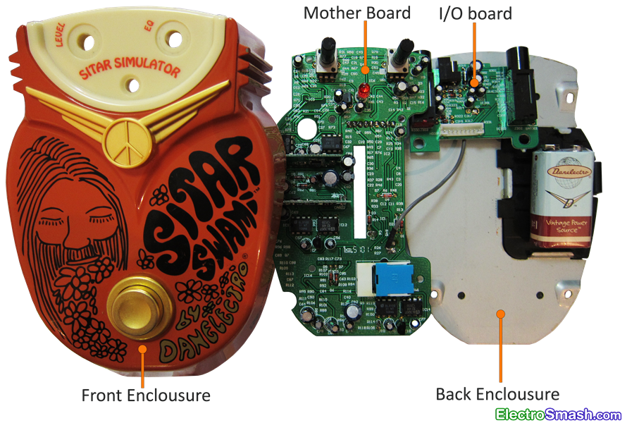
- Input/Output Board: It is a small double sided PCB where the input/output jacks are placed. It provides the in/out buffering, basic power supply protection and power-on mechanism.
- Mother Board: It is the main board of the circuit, containing the core circuitry. It also carries two small auxiliary printed circuit boards soldered directly over this main PCB.
The pedal has two knobs: Mix trimmer, controlling the blend between the dry original and wet effected signal and therefore making the effect more or less dramatic. The Level potentiometer regulates the output volume level.
1.1 Input/Output Board:
The double-sided PCB contains two ICs: an analog multiplexer (HCF4053) and a dual flip-flop (4013B). Additional general purpose NPN transistors (BS39) are used as buffers. The main functionality of this PCB is to serve as an input/output buffer and aided by the analog multiplexer make the input signal to pass through the pedal core effect or bypass it, keeping the guitar signal unmodified.
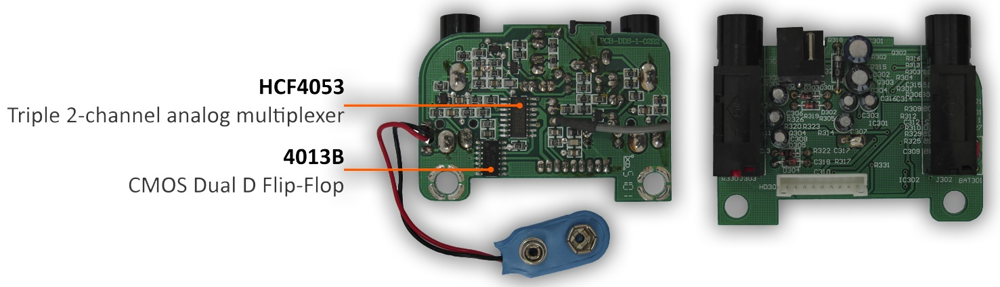
- The HCF4053 is a triple 2-channel analog multiplexer/demultiplexer: meaning that though three separate digital control inputs (A, B, C and inhibit) a pair of channels are connected. Each channel is attached in a single pole double throw SPDT configuration. It has 2 inputs and 3 outputs although inputs and output are bidirectional.
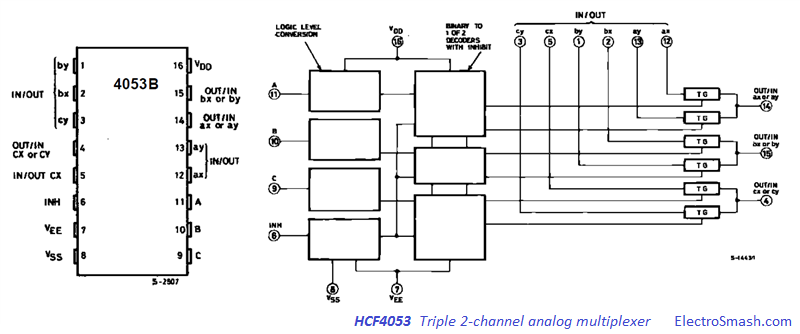
- The 4013B is a CMOS Dual D-type Flip Flop: Each flip-flop has independent data, set, reset, and clock inputs, Q and Q_neg outputs. This part can be used for toggle the analog multiplexer between on and bypass states.
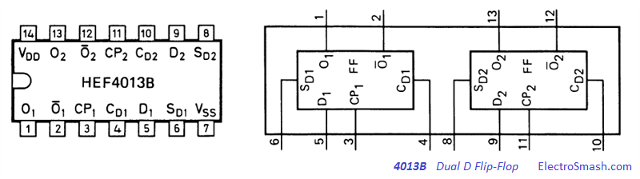
1.2 Power Supply.
The main supply +9V taken from a battery or a DC adapter is common to all circuit components. It is decoupled to ground with large electrolytic capacitors in order to remove the possible voltage ripple. All the active chips are compatible with this 9V supply and get the power directly from the battery/adaptor without any active voltage regulation element.
The diode D8 protects the pedal against reverse polarity connections. The pedal also has the typical stereo jack arrangement to be used as power on switch, connecting the battery (-) terminal to ground when the guitar jack is connected.
1.3 Mother Board.
It is the main board of the circuit containing a big amount of passive components (Rs + Cs), several transistors, diodes and fifteen ICs: BL3102 x 3, BL3207 x 3, TL074 x 3, PT2399s, TL072 x 2 and 4013B: The Danelectro Sitar Swami creates the oscillating/droning/resonating tones using three Bucket Brigade subsystems (BL3102 + BL3207) and an integrated echo generator (PT2399s).
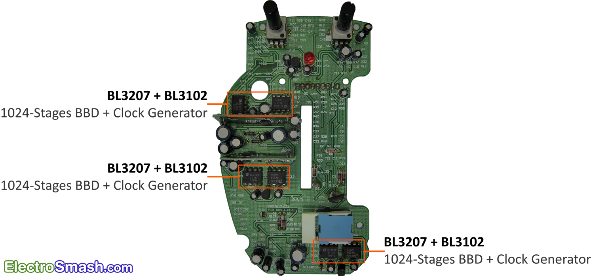
Each of the Bucket Brigade Device stages requires pre-post active low pass filtering (anti-aliasing and reconstruction filter), some signal pre-de emphasis, companding, mixing and buffering, for this purpose be three quad op-amp TL074 is used.
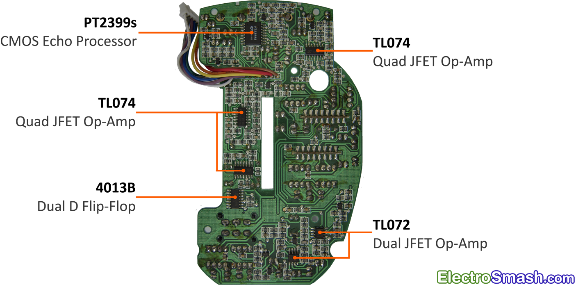
- BL3207: It is a 1024-Stage Bucked Brigade Device manufactured by Shanghai Belling Co, pin compatible with the well-known MN3207 by Matsushita/Panasonic. It is based in N-channel silicon transistors and operates at low voltage from +4V to +10V supply, providing a signal delay adjustable from 2.56ms to 51.2ms with S/N=73dB, THD=0.4% (Vin=0.25Vrms), input clock frequency range from 10 to 200KHz.
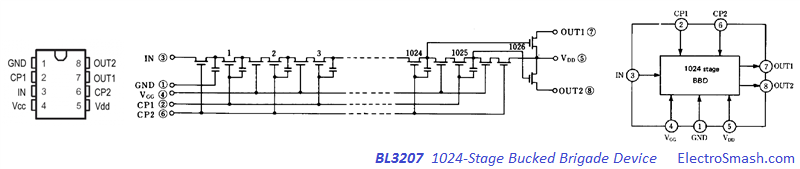
- BL3102: It is a Clock Generator for the BBD BL3207 manufactured by Shanghai Belling Co, pin compatible with MN3102. Utilizing CMOS technology, with low Voltage Operation from +4V to +10V. It provides the two-phase clock signal and the VGG reference voltage necessary to drive BL3207. The oscillation frequency is easily settled with an external RC network, providing clock frequency ranges from 1KHz to 500KHz.
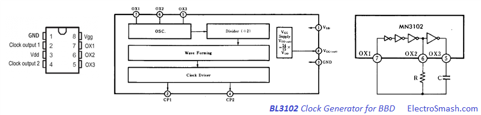
- PT2399s: It is an Echo/Delay Processor integrated component based on CMOS technology by Princeton Technology Corp. It accepts audio input signals: first of all the signal is low pass filtered (anti-aliasing filter) and an ADC transfer the analog signal into a bit stream to be saved into the internal 44Kbit RAM. After processing, the bitstream will de-modulate by DAC and low-pass filter (reconstruction filter). The delay time is determined by internal VCO clock frequency, and the designer can modify the VCO frequency by changing the external resistance. The PT2399 archives low distortion (THD<0.5%@0.5Vrms) and low noise (No<-90dBV). The pin arrangement and application circuit are optimized for easy PCB layout and cost saving.
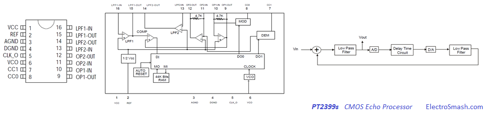
- TL074: is a Low noise JFET quad operational amplifier by ST Microelectronics. This part has been widely used in stompboxes because of the small footprint that saves tons of space and has low power consumption (low input bias and offset currents). The device is suitable to manage audio signal due to the high slew rate, high input impedance, low offset voltage temperature coefficient and THD (0.01% typ).
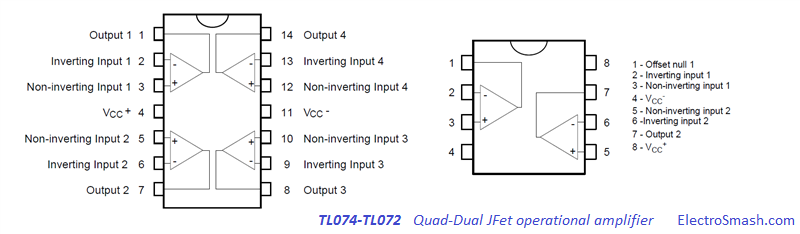
- TL072: JFET Dual operational amplifier. From the same family as the TL074 and sharing similar characteristics but only including 2 op-amps.
- 4013B: is a CMOS Dual D-type Flip Flop: Each flip-flop has independent data, set, reset, and clock inputs and Q and Q_neg outputs. This part can be used for toggle applications.
1.4 Auxiliary Boards.
They are two identical PCBs soldered perpendicular to the Mother Board and containing passive components in a symmetric placement.
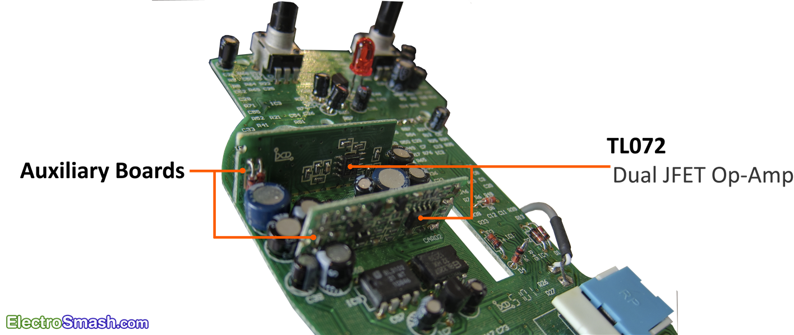
- TL072c x 4 JFET Dual operational amplifier: Each of the Auxiliary Boards contain two TL072 chips.
2. Resources.
2.1 Datasheets.
PT2399s datasheet.
TL074 datasheet.
4013B datasheet.
Thanks for reading, all feedback is appreciated
Some Rights Reserved, you are free to copy, share, remix and use all material under attribution and non-commercial conditions.
Trademarks, brand names and logos are the property of their respective owners.
Rescued from a 2022 Wayback Machine capture of the original electrosmash.com article, which is no longer online. Some links to pages outside this archive have been removed. The original PDF export of this article is in the pdf backups folder.